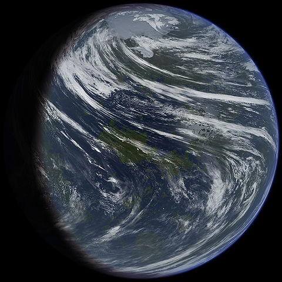
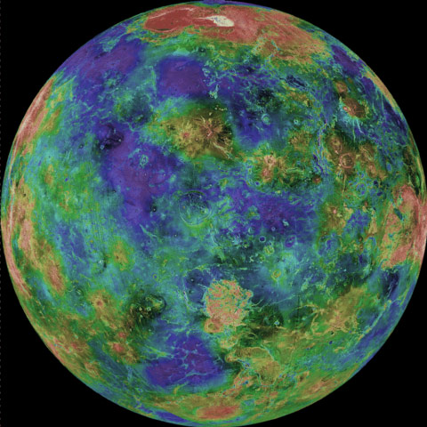

Moons

Venus’s Fake Moon 1
This moon is amazing it looks like it’s habitable by humans.
- Diameter (km)
- 22.2 km
- Mass (kg)
- 2×1015 km
- Orbital period
- 30.35 h

Venus’s Fake Moon 2
Look at all the pretty colours of this moon—mustn’t be real-colour.
- Diameter (km)
- 12.6 km
- Mass (kg)
- 10.8×1015 km
- Orbital period
- 7.66 h